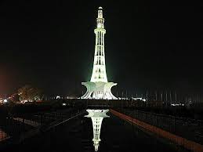
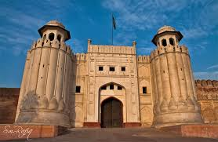
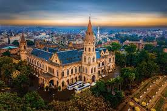
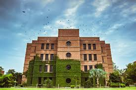
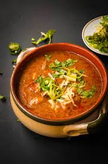
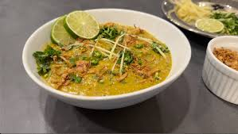
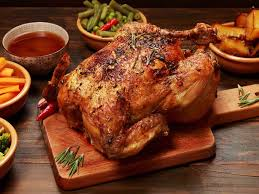
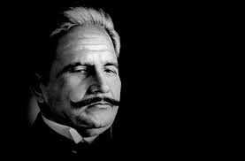
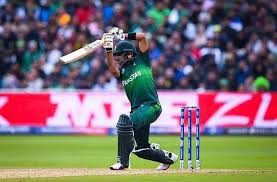

History of Lahore
Lahore, the capital of Punjab province in Pakistan, is one of the most historically significant cities in the country. It is known for its rich culture, history, and numerous landmarks. The city's history dates back to ancient times, with many civilizations having left their mark on it.
For more details, visit the History of Lahore.
Back to TopImportant Places in Lahore
- Badshahi Mosque
- Minar-e-Pakistan 
- Lahore Fort 

Popular Educational Institutes
- University of the Punjab
- Government College University 
- Lahore University of Management Sciences (LUMS) 

For more details, visit the University of the Punjab, Government College University, or LUMS.
Back to TopPopular Dishes of Lahore
- Nihari 
- Haleem 
- Lahori Chargha 
Famous Personalities from Lahore
- Allama Iqbal (Poet and Philosopher) 
- Abdus Salam (Nobel Laureate in Physics)
- Babar Azam (NO 1 ODI Batsman) 

Learn more about these personalities: Allama Iqbal, Abdus Salam, Babar Azam.
Back to TopIndustries in Lahore
Lahore is an industrial hub, with sectors like textiles, food processing, chemicals, and information technology thriving in the city. It is famous for its hand-woven textiles, leather goods, and software development companies.
Back to Top